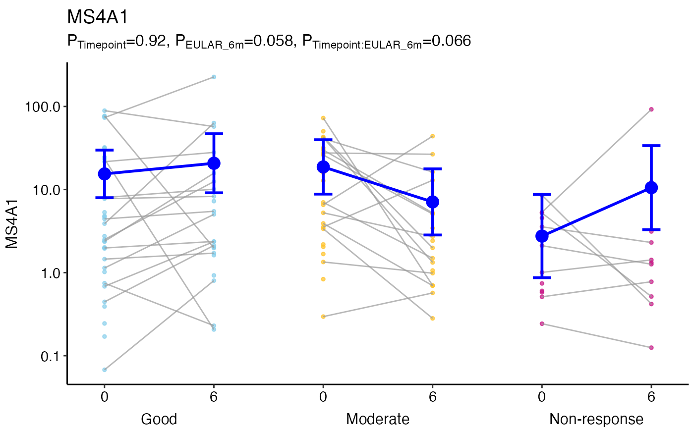

Plot to show differences between groups and over time using ggplot2.
ggmodelPlot( object, geneName = NULL, x1var = NULL, x2var = NULL, x2shift = NULL, xlab = NULL, ylab = geneName, plab = NULL, title = geneName, logTransform = is(object, "GlmmSeq"), shapes = 19, colours = "grey60", lineColours = "grey60", markerSize = 1, fontSize = 12, alpha = 0.7, x2Offset = 5, addPoints = TRUE, addModel = TRUE, modelSize = 4, modelColours = "blue", modelLineSize = 1, modelLineColours = modelColours, addBox = FALSE, ... )
| object | A glmmSeq/lmmSeq object created by
|
|---|---|
| geneName | The gene/row name to be plotted |
| x1var | The name of the first (inner) x parameter, typically 'time'. This is anticipated to have different values when matched by ID. |
| x2var | The name of an optional second (outer) x parameter, which should be a factor. |
| x2shift | Amount to shift along x axis for each level of |
| xlab | Title for the x axis |
| ylab | Title for the y axis |
| plab | Optional character vector of labels for p-values. These must
align with column names in |
| title | Plot title. If NULL gene name is used |
| logTransform | Whether to perform a log10 transform on the y axis |
| shapes | The marker shapes (default=19) |
| colours | The marker colours as vector |
| lineColours | The line colours (default='grey60') as vector |
| markerSize | Size of markers (default=1) |
| fontSize | Plot font size |
| alpha | Line and marker opacity (default=0.7) |
| x2Offset | Vertical adjustment to secondary x-axis labels (default=5) |
| addPoints | Whether to add underlying data points (default=TRUE) |
| addModel | Whether to add the fit model with markers (default=TRUE) |
| modelSize | Size of model points (default=4) |
| modelColours | Colour of model fit markers (default="blue") as vector |
| modelLineSize | Size of model points (default=1) as vector |
| modelLineColours | Colour of model fit lines |
| addBox | Logical whether to add boxplots for mean and IQR |
| ... | Other parameters to pass to
|
Returns a paired plot for matched samples.
data(PEAC_minimal_load) disp <- apply(tpm, 1, function(x){ (var(x, na.rm=TRUE)-mean(x, na.rm=TRUE))/(mean(x, na.rm=TRUE)**2) }) MS4A1glmm <- glmmSeq(~ Timepoint * EULAR_6m + (1 | PATID), countdata = tpm['MS4A1', , drop = FALSE], metadata = metadata, dispersion = disp, verbose = FALSE) ggmodelPlot(object = MS4A1glmm, geneName = 'MS4A1', x1var = 'Timepoint', x2var = 'EULAR_6m', colours = c('skyblue', 'goldenrod1', 'mediumvioletred')) 